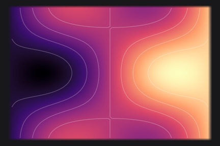
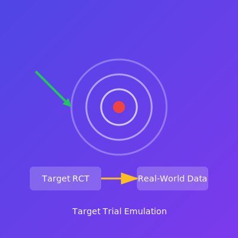

问卷信效度分析：从理论到实践
12 min
统计分析方法
心理测量学
掌握问卷信度与效度分析的完整流程，从Cronbach α到验证性因子分析
覆盖统计分析、机器学习与实用 R 包的系统教程与实践指南。

探索混合暴露非线性效应和复杂交互作用的终极工具：从变量选择到暴露-反应曲面的可视化分析。


使用观察性数据模拟随机对照试验，遵循TARGET报告指南进行严谨的因果推断。
如何使用 R 语言的 tidytext 和 LDA 主题模型辅助质性研究，发现文本背后的模式。

如何使用 poLCA 识别不可观测的亚群，从市场细分到医学诊断的实战分类技术。